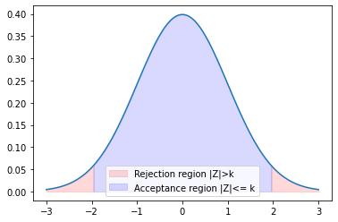
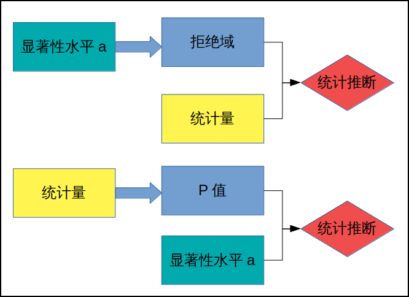
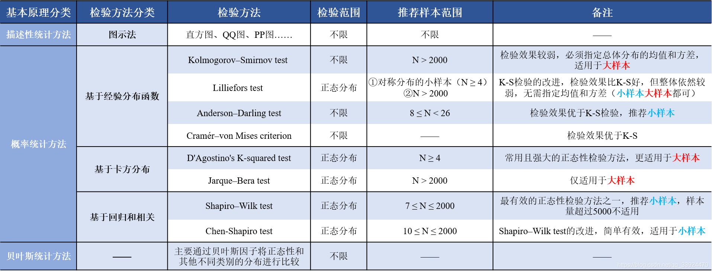
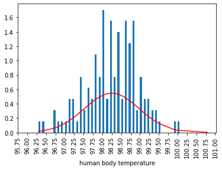
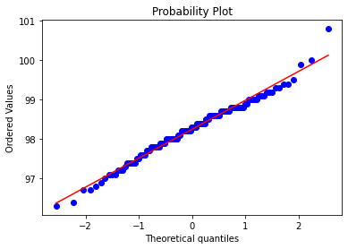
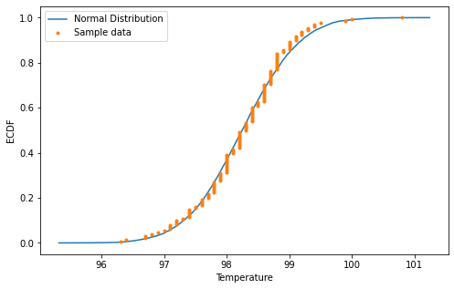

正文：4 应用篇
12 假设检验
12.1 假设检验的基本概念
12.1.1 假设检验的基本思想
根据实际情况的要求对检验对象提出一个假设H 0 H_0 H 0 原假设 ), 同时提出一个与原假设对立的备设假设 H 1 H_1 H 1
$P\{\color{Red}Z\in \color{Blue}W|H_0$为真$\}\le \color{Green}\alpha (\alpha$很小$)$
Z \color{Red}Z Z
W \color{Blue}W W
α \color{Green}\alpha α
例 12.1
已知某炼铁厂的铁水含碳量X ∼ N ( 4 . 5 5 , 0 . 0 6 ) X\sim N(4.55, 0.06) X ∼ N ( 4 . 5 5 , 0 . 0 6 ) X ¯ = 4 . 5 7 \bar X = 4.57 X ¯ = 4 . 5 7 μ \mu μ
设H 0 : μ = 4 . 5 5 , H 1 : μ ≠ 4 . 5 5 H_0:\mu=4.55,H_1:\mu\ne4.55 H 0 : μ = 4 . 5 5 , H 1 : μ ≠ 4 . 5 5
令事件A : ∣ X ¯ − 4 . 5 5 ∣ ≥ d , d > 0 , α = 0 . 0 5 A:|\bar X-4.55|\ge d,d>0, \alpha=0.05 A : ∣ X ¯ − 4 . 5 5 ∣ ≥ d , d > 0 , α = 0 . 0 5
P ( P( P ( H 0 H_0 H 0 H 0 ) = P ( ∣ X ¯ − 4 . 5 5 ∣ ≥ d ) ≤ α H_0)=P(|\bar X -4.55|\ge d)\le \alpha H 0 ) = P ( ∣ X ¯ − 4 . 5 5 ∣ ≥ d ) ≤ α
P ( P( P ( H 0 H_0 H 0 H 0 ) = P ( ∣ X ¯ − 4 . 5 5 σ / n ∣ ≥ d σ / n ) ≤ α H_0)=P(|\frac{\bar X -4.55}{\sigma/\sqrt n}|\ge \frac{d}{\sigma/\sqrt n})\le \alpha H 0 ) = P ( ∣ σ / √ n X ¯ − 4 . 5 5 ∣ ≥ σ / √ n d ) ≤ α
若 X 的样本观察值满足:
$|Z|=|\frac{\bar X -4.55}{\sigma/\sqrt n}| < k\Rightarrow 接受H_0$
$|Z|=|\frac{\bar X -4.55}{\sigma/\sqrt n}| \ge k\Rightarrow 拒绝H_0( ( (
k = Z α / 2 k = Z_{\alpha/2} k = Z α / 2
由α = 0 . 0 5 \alpha=0.05 α = 0 . 0 5 Z α / 2 = 1 . 9 6 Z_{\alpha/2}=1.96 Z α / 2 = 1 . 9 6
Z = 4 . 5 7 − 4 . 5 5 0 . 6 6 / 1 0 , ∣ Z ∣ < Z α / 2 Z=\frac{4.57-4.55}{0.66/\sqrt{10}}, |Z|<Z_{\alpha/2} Z = 0 . 6 6 / √ 1 0 4 . 5 7 − 4 . 5 5 , ∣ Z ∣ < Z α / 2 H 0 H_0 H 0
1 2 3 4 5 6 7 8 9 10 11 import numpy as npfrom scipy.stats import norm4.55 0.06 4.57 10 0.05 1 - alpha / 2 )
(1.054092553389484, 1.959963984540054)
1 2 3 4 5 6 7 8 9 10 11 12 13 14 15 16 17 import matplotlib.pyplot as pltfrom scipy.stats import normimport numpy as np0.05 3 , 3 , 100 ), norm.pdf(np.linspace(-3 , 3 , 100 ))) 3 , norm.ppf(alpha / 2 ), 50 ),3 , norm.ppf(alpha / 2 ), 50 )), .15 , color="red" , label="Rejection region |Z|>k" )1 - alpha / 2 ), 3 , 50 ),1 - alpha / 2 ), 3 , 50 )), .15 , color="red" )2 ), norm.ppf(1 - alpha / 2 ), 50 ),2 ), norm.ppf(1 - alpha / 2 ), 50 )), .15 , color="blue" , label="Acceptance region |Z|<= k" )

12.1.2 左右侧检验与双侧检验
左侧检验: H 0 : μ ≥ μ 0 ( H_0:\mu\ge\mu_0( H 0 : μ ≥ μ 0 ( μ = μ 0 ) , H 1 : μ < μ 0 \mu=\mu_0),H_1:\mu<\mu_0 μ = μ 0 ) , H 1 : μ < μ 0 Z ≤ − Z α Z\le-Z_\alpha Z ≤ − Z α
右侧检验: H 0 : μ ≤ μ 0 ( H_0:\mu\le\mu_0( H 0 : μ ≤ μ 0 ( μ = μ 0 ) , H 1 : μ > μ 0 \mu=\mu_0),H_1:\mu>\mu_0 μ = μ 0 ) , H 1 : μ > μ 0 Z ≥ Z α Z\ge Z_\alpha Z ≥ Z α
双侧检验: H 0 : μ = μ 0 , H 1 : μ ≠ μ 0 H_0:\mu=\mu_0,H_1:\mu\ne\mu_0 H 0 : μ = μ 0 , H 1 : μ ≠ μ 0 ∣ Z ∣ ≥ Z α |Z|\ge Z_\alpha ∣ Z ∣ ≥ Z α
12.1.3 P 值检验法
以上为临界值检验法，下面介绍 P 值检验法，所谓 P 值检验法就是由检验统计量的样本观察值得出的原假设可被拒绝的最小显著性水水平。
数学基础-概率论 05（统计推断-分布拟合检验）

例 12.3
某食品厂用自动装罐机装罐头食品, 每罐的标准重量μ 0 = 5 0 0 g \mu_0=500g μ 0 = 5 0 0 g
设罐重是服从正态分布的随机变量, 标准差σ = 1 0 \sigma=10 σ = 1 0
从中抽取n 1 = 1 0 n_1 =10 n 1 = 1 0 X ¯ 1 = 5 0 6 g \bar X_1=506g X ¯ 1 = 5 0 6 g
隔一段时间后又抽n 1 = 1 0 n_1=10 n 1 = 1 0 X ¯ 2 = 5 0 5 g \bar X_2=505g X ¯ 2 = 5 0 5 g
问这时机器工作是否正常?
提出假设H 0 : μ = μ 0 = 5 0 0 , H 1 : μ ≠ μ 0 H_0:\mu=\mu_0=500,H_1:\mu\ne\mu_0 H 0 : μ = μ 0 = 5 0 0 , H 1 : μ ≠ μ 0
取α = 0 . 0 5 \alpha=0.05 α = 0 . 0 5
Z 1 = 5 0 6 − 5 0 0 1 0 / 1 0 = 1 . 8 9 7 , Z 2 = 5 0 5 − 5 0 0 1 0 / 1 0 = 1 . 5 8 1 Z_1=\frac{506-500}{10/\sqrt{10}}=1.897, Z_2=\frac{505-500}{10/\sqrt{10}}=1.581 Z 1 = 1 0 / √ 1 0 5 0 6 − 5 0 0 = 1 . 8 9 7 , Z 2 = 1 0 / √ 1 0 5 0 5 − 5 0 0 = 1 . 5 8 1
P { Z ≥ Z 1 } = P { Z ≥ 1 . 8 9 7 } = 1 − Φ ( 1 . 8 9 7 ) = 0 . 0 2 9 > α 2 = 0 . 0 2 5 P\{Z\ge Z_1\}=P\{Z\ge 1.897\}=1-\Phi(1.897)=0.029>\frac{\alpha}{2}=0.025 P { Z ≥ Z 1 } = P { Z ≥ 1 . 8 9 7 } = 1 − Φ ( 1 . 8 9 7 ) = 0 . 0 2 9 > 2 α = 0 . 0 2 5
P { Z ≥ Z 2 } = P { Z ≥ 1 . 5 8 1 } = 1 − Φ ( 1 . 5 8 1 ) = 0 . 0 5 7 > α 2 = 0 . 0 2 5 P\{Z\ge Z_2\}=P\{Z\ge 1.581\}=1-\Phi(1.581)=0.057>\frac{\alpha}{2}=0.025 P { Z ≥ Z 2 } = P { Z ≥ 1 . 5 8 1 } = 1 − Φ ( 1 . 5 8 1 ) = 0 . 0 5 7 > 2 α = 0 . 0 2 5
接受原假设H 0 H_0 H 0
12.2 Z 检验(正态总体均值的假设检验, 方差已知时)
X ¯ ∼ N ( μ 0 , σ 2 n ) \bar X\sim N(\mu_0, \frac{\sigma^2}{n}) X ¯ ∼ N ( μ 0 , n σ 2 ) H 0 H_0 H 0 Z = X ¯ − μ σ / n ∼ N ( 0 , 1 ) Z=\frac{\bar X -\mu}{\sigma/\sqrt n}\sim N(0,1) Z = σ / √ n X ¯ − μ ∼ N ( 0 , 1 )
若两组样本方差σ 1 2 \sigma^2_1 σ 1 2 σ 2 2 \sigma^2_2 σ 2 2 Z Z Z
Z = X ¯ 1 − X ¯ 2 σ 1 2 n 1 + σ 2 2 n 2 ∼ N ( 0 , 1 ) Z=\frac{\bar X_1 - \bar X_2}{\sqrt{\frac{\sigma^2_1}{n_1}+\frac{\sigma^2_2}{n_2}}}\sim N(0,1)
Z = √ n 1 σ 1 2 + n 2 σ 2 2 X ¯ 1 − X ¯ 2 ∼ N ( 0 , 1 )
12.3 t 检验(正态总体均值的假设检验, 方差未知时)
由于总体方差未知, 用样本标准差S S S Z Z Z σ \sigma σ
T = X ¯ − μ 0 S / n ∼ t ( n − 1 ) T=\frac{\bar X - \mu_0}{S/\sqrt n}\sim t(n-1)
T = S / √ n X ¯ − μ 0 ∼ t ( n − 1 )
若有两种独立样本, 选取统计量
T = ( X ¯ − Y ¯ ) − ( μ 1 − μ 2 ) S w 1 n 1 + 1 n 2 T=\frac{(\bar X - \bar Y)-(\mu_1-\mu_2)}{S_w\sqrt{\frac{1}{n_1}+\frac{1}{n_2}}}
T = S w √ n 1 1 + n 2 1 ( X ¯ − Y ¯ ) − ( μ 1 − μ 2 )
其中
S w = ( n 1 − 1 ) S 1 2 + ( n 2 − 1 ) S 2 2 n 1 + n 2 − 2 S_w=\sqrt{\frac{(n_1-1)S^2_1+(n_2-1)S^2_2}{n_1+n_2-2}}
S w = √ n 1 + n 2 − 2 ( n 1 − 1 ) S 1 2 + ( n 2 − 1 ) S 2 2
12.4 卡方检验
未知总体的分布的假设检验(非参数检验)χ 2 \chi^2 χ 2
其基本思想是用得到的样本观察值来与假设的总体的分布函数(或分布律)来进行某种拟合, 再根据拟合的程度确定是否接受原假设, 从而推断总体是否服从假设的分布.
设总体X X X F ( x ) F(x) F ( x ) X 1 , X 2 , . . . , X n X_1,X_2,...,X_n X 1 , X 2 , . . . , X n X X X
H 0 : F ( x ) = F 0 ( x ) , H 1 : F ( x ) ≠ F 0 ( x ) H_0:F(x)=F_0(x), H_1:F(x)\ne F_0(x) H 0 : F ( x ) = F 0 ( x ) , H 1 : F ( x ) ≠ F 0 ( x ) F 0 ( x ) F_0(x) F 0 ( x )
皮尔逊定理
若n n n n ≥ 5 0 n\ge 50 n ≥ 5 0 H 0 H_0 H 0
统计量χ 2 = Σ i = 1 k ( n i − n p i ) 2 n p i \chi^2=\Sigma^k_{i=1}\frac{(n_i-np_i)^2}{np_i} χ 2 = Σ i = 1 k n p i ( n i − n p i ) 2 χ 2 ( k − r − 1 ) \chi^2(k-r-1) χ 2 ( k − r − 1 ) r r r
例 12.12
某市自开办有奖储蓄以来, 13 期兑奖中各数码的频数汇总如下表所示
数码i i i
0 1 2 3 4 5 6 7 8 9
总数
频数f i f_i f i
21 28 37 36 31 45 30 37 33 52
350
如果检验器械或操作方法没有问题, 则各数码服从均匀分布, 提出检验假设H 0 : p i = 1 1 0 , i = 0 , 1 , 2 , . . . , 9 H_0:p_i=\frac{1}{10},i=0,1,2,...,9 H 0 : p i = 1 0 1 , i = 0 , 1 , 2 , . . . , 9 n p i = 3 5 np_i=35 n p i = 3 5
统计量χ 2 = Σ i = 1 1 0 ( n i − n p i ) 2 n p i = 6 8 8 3 5 = 1 9 . 6 5 7 \chi^2=\Sigma^{10}_{i=1}\frac{(n_i-np_i)^2}{np_i}=\frac{688}{35}=19.657 χ 2 = Σ i = 1 1 0 n p i ( n i − n p i ) 2 = 3 5 6 8 8 = 1 9 . 6 5 7
而χ α 2 ( k − 1 ) = 1 6 . 9 , 1 9 . 6 5 7 > 1 6 . 9 \chi^2_\alpha(k-1)=16.9,19.657>16.9 χ α 2 ( k − 1 ) = 1 6 . 9 , 1 9 . 6 5 7 > 1 6 . 9 H 0 H_0 H 0
12.5 假设检验中的两类错误
决策结果\实际情况
H 0 H_0 H 0 H 0 H_0 H 0
拒绝H 0 H_0 H 0
弃真(第一类错误)
取伪(无错)
接受H 0 H_0 H 0
存真(无错)
取伪(第二类错误)
P { Z ∈ W ∣ H 0 i s t r u e } ≤ α P\{Z\in W|H_0 is true\}\le \alpha P { Z ∈ W ∣ H 0 i s t r u e } ≤ α
P { Z ∉ W ∣ H 0 i s n o t t r u e } = β P\{Z\notin W|H_0 is not true\}=\beta P { Z ∉ W ∣ H 0 i s n o t t r u e } = β
在假设检验中, 通常是要求犯第一类错误的概率不超过预定的数α \alpha α
12.6 综合实例 1——体检数据中的假设检验问题
变量名
描述
Temperature
体温(华氏温度)
Gender
性别(1 为男, 2 为女)
Heart Rate
心率(每分钟心跳次数)
(1)显示数据集及相关统计描述信息(均值, 标准差等)
1 2 3 4 5 6 7 8 9 10 11 12 13 import pandas as pdimport pylabimport mathimport numpy as npimport matplotlib.pyplot as pltimport numpy as npfrom scipy.stats import normimport scipy.statsimport warnings'ignore' )'normtemp.txt' , sep=' ' , names=['Temperature' , 'Gender' , 'Heart Rate' ])
Temperature
Gender
Heart Rate
count
130.000000
130.000000
130.000000
mean
98.249231
1.500000
73.761538
std
0.733183
0.501934
7.062077
min
96.300000
1.000000
57.000000
25%
97.800000
1.000000
69.000000
50%
98.300000
1.500000
74.000000
75%
98.700000
2.000000
79.000000
max
100.800000
2.000000
89.000000
分别显示了各属性的总数, 均值, 标准差, 最大值和最小值, 以及各种分位点值
Temperature
Gender
Heart Rate
0
96.3
1
70
1
96.7
1
71
2
96.9
1
74
3
97.0
1
80
4
97.1
1
73
(2) 试检验体温的分布是否服从正态分布
这里用的跟之前书上讲的根本就不是一个方法…
正态检验 (Normality Test)——常见方法汇总与简述

有多种手段评估数据是否正态分布。分两大类：图形和统计量。图形手段包括 q-q plot 和 p-p plot，统计量手段包括 Kolmogorov-Smirnov 检验 and Shapiro-Wilks 检验。
Samuel Shapiro 和 MartinWilk 于 1965 年提出了 Shapiro–Wilk 检验。他们观察到 Normal probability plot 与线性回归很类似。Normalprobability plot 是 q-q plot 的特例，检查样本数据集是否匹配某正态分布，比如标准正态分布 N(0,1)。
1.直方图初判
1 2 3 4 5 6 7 8 9 10 11 observed_temperatures = df['Temperature' ].sort_values()min (), stop= observed_temperatures.max (), step = .05 )True , stacked=True )'red' )95.75 ,101.25 ,0.25 ),rotation=90 )'Human Body Temperature Distributions' )'human body temperature' )print ('Average (Mu): ' + str (mu) + ' / ' 'Standard Deviation: ' +str (std))

Average (Mu): 98.24923076923076 / Standard Deviation: 0.7303577789050376
2.利用 Scipy 工具检验正态性
1 2 3 4 5 6 7 8 9 10 11 12 13 14 15 16 """ 语法:scipy.stats.shapiro(x, a=None, reta=False) x 为待检验的数据 返回(统计数, P 值) """ print ("Shapiro-Wilk Stat:" ,shapiro_test, "\nShapiro-Wilk p-Value:" , shapiro_p)""" 语法 scipy.stats.normaltest(a, axis=0, nan_policy='propagate') a 是待检验数据 axis 正态分布测试将沿其计算的轴 返回：(对数据集进行假设检验的 k2 值, P 值) """ print ('p:' ,p)
Shapiro-Wilk Stat: 0.9865769743919373
Shapiro-Wilk p-Value: 0.2331680953502655
p: 0.2587479863488212
3.通过分位数-分位数(Q-Q)图检查正态分布
1 2 3 "norm" , plot=pylab)

4.基于 ECDF(经验累积分布函数)正态检验
根据当前样本的均值和标准差随机生成一个新的正态分布, 然后将它的累积分布函数和样本数据的累积分布函数比较, 如果实测差异足够大, 该检验将拒绝总体呈正态分布的原假设
1 2 3 4 5 6 7 8 9 10 11 12 13 14 15 16 17 18 19 20 21 22 23 24 25 26 27 28 29 30 31 32 33 def ecdf (data ):"""Compute ECDF""" len (data)1 , n+1 ) / nreturn x, ylen (df['Temperature' ]) 'Temperature' ]) 'Temperature' ]) print ('Mean temperature: ' , mu, 'with standard deviation of +/-' , std)10000 )'Temperature' ])8 , 5 ))'.' , linestyle='none' )'ECDF' )'Temperature' )'Normal Distribution' , 'Sample data' ))
Mean temperature: 98.24923076923076 with standard deviation of +/- 0.730357778905038
<matplotlib.legend.Legend at 0x1bc43440b20>

3 有学者提出 98.6°F(37°C)是人类的平均气温, 我们是否接受该观点?
1 2 3 4 5 from scipy import stats98.6 'Temperature' ], CW_mu, axis=0 )
Ttest_1sampResult(statistic=-5.454823292364077, pvalue=2.410632041561008e-07)
p v a l u e ≈ 0 pvalue\approx0 p v a l u e ≈ 0
4 男性和女性的体温有明显的差异吗?
1 2 3 4 5 6 7 8 9 10 11 12 13 14 15 16 17 18 19 female_temp = df.Temperature[df.Gender == 2 ]1 ]print (stats.levene(rvs1, rvs2))print ('Average female body temperature = ' + str (mean_female_temp))print ('Average male body temperature = ' + str (mean_male_temp))""" 计算两个独立分数样本的平均值的 T-test。 这是对 2 个独立样本具有相同平均(预期)值的零假设的检验。此测试假定默认情况下总体具有相同的方差。 """ print (stats.ttest_ind(female_temp, male_temp, axis=0 ))
LeveneResult(statistic=2.1897731829800553, pvalue=0.14138681028945846)
Average female body temperature = 98.39384615384616
Average male body temperature = 98.1046153846154
Ttest_indResult(statistic=2.2854345381654984, pvalue=0.02393188312240236)
LeveneResult 每次都不尽相同, 但是p v a l u e pvalue p v a l u e
Ttest_indResult 的p v a l u e pvalue p v a l u e
12.7 综合实例 2——种族对求职是否有影响
1 2 3 4 5 6 import pandas as pdimport numpy as npfrom scipy import stats'us_job_market_discrimination.dta' )
id
ad
education
ofjobs
yearsexp
honors
volunteer
military
empholes
occupspecific
...
compreq
orgreq
manuf
transcom
bankreal
trade
busservice
othservice
missind
ownership
0
b
1
4
2
6
0
0
0
1
17
...
1.0
0.0
1.0
0.0
0.0
0.0
0.0
0.0
0.0
1
b
1
3
3
6
0
1
1
0
316
...
1.0
0.0
1.0
0.0
0.0
0.0
0.0
0.0
0.0
2
b
1
4
1
6
0
0
0
0
19
...
1.0
0.0
1.0
0.0
0.0
0.0
0.0
0.0
0.0
3
b
1
3
4
6
0
1
0
1
313
...
1.0
0.0
1.0
0.0
0.0
0.0
0.0
0.0
0.0
4
b
1
3
3
22
0
0
0
0
313
...
1.0
1.0
0.0
0.0
0.0
0.0
0.0
1.0
0.0
Nonprofit
5 rows × 65 columns
1 2 3 blacks = data[data.race == 'b' ]'w' ]
count 2435.000000
mean 0.064476
std 0.245649
min 0.000000
25% 0.000000
50% 0.000000
75% 0.000000
max 1.000000
Name: call, dtype: float64
count 2435.000000
mean 0.096509
std 0.295346
min 0.000000
25% 0.000000
50% 0.000000
75% 0.000000
max 1.000000
Name: call, dtype: float64
黑人录取率 6.4%, 白人录取率 9.7%
1 2 3 4 5 6 7 blacks_called = len (blacks[blacks['call' ] == True ])len (blacks[blacks['call' ] == False ])len (whites[whites['call' ] == True ])len (whites[whites['call' ] == False ])'blacks' : {'called' : blacks_called, 'not_called' : blacks_not_called},'whites' : {'called' : whites_called, 'not_called' : whites_not_called}})
blacks
whites
called
157
235
not_called
2278
2200
1 2 3 4 5 6 7 8 9 10 11 12 len (data) * rate_of_callbackslen (data) * (1 - rate_of_callbacks)'blacks' :{'called' : expected_called / 2 , 'not_called' : expected_not_called / 2 },'whites' : {'called' : expected_called / 2 , 'not_called' : expected_not_called / 2 }})
blacks
whites
called
196.0
196.0
not_called
2239.0
2239.0
1 2 3 4 5 6 import scipy.stats as stats2 , expected_not_called / 2 , expected_called / 2 , expected_called / 2 ]
Power_divergenceResult(statistic=16.87905041427022, pvalue=0.0007483959441097264)
p v a l u e ≤ χ 0 . 0 5 2 ( 1 ) pvalue\le \chi^2_{0.05}(1) p v a l u e ≤ χ 0 . 0 5 2 ( 1 )
12.9 习题
1 t 检验
在 10 块土地上同时种植甲, 乙两种作物, 其产量服从正态分布, 并且方差相同.
计算结果得X ¯ = 3 0 . 9 7 , Y ¯ = 2 1 . 7 9 , S x = 2 6 . 7 , S y = 1 2 . 1 \bar X=30.97, \bar Y=21.79, S_x=26.7, S_y=12.1 X ¯ = 3 0 . 9 7 , Y ¯ = 2 1 . 7 9 , S x = 2 6 . 7 , S y = 1 2 . 1
1 2 3 4 5 6 7 8 9 10 11 12 13 14 15 16 17 18 19 import numpy as npfrom scipy import stats30.97 21.79 26.7 12.1 10 10 1 )) * std11 )) * std210 , mean2=mean2, std2=modified_std2, nobs2=10 )print ("t statistic is: " , statistic)print ("pvalue is: " , pvalue)
t statistic is: 0.9394886573346275
pvalue is: 0.35991721678518696
p v a l u e ≥ 0 . 0 5 pvalue\ge 0.05 p v a l u e ≥ 0 . 0 5
2 卡方检验
从某中学随机抽取两个班, 判断这两个班对待文理分科的态度是否有显著差异(α = 0 . 0 5 \alpha=0.05 α = 0 . 0 5
卡方检验（两个类别变量是否独立）以及 chi2_contingency
赞成
反对
甲班
37
27
64
乙班
39
21
60
76
48
124
自由度=(行数-1)(列数-1)=1
χ 2 = ( A D − B C ) 2 ( A + B ) ( C + D ) = 1 9 . 8 3 7 5 > χ 0 . 0 5 2 ( 1 ) = 3 . 8 4 3 \chi^2=\frac{(AD-BC)^2}{(A+B)(C+D)}=19.8375>\chi^2_{0.05}(1)=3.843 χ 2 = ( A + B ) ( C + D ) ( A D − B C ) 2 = 1 9 . 8 3 7 5 > χ 0 . 0 5 2 ( 1 ) = 3 . 8 4 3
所以没有显著差异
1 2 3 4 5 6 from scipy.stats import chi2_contingencyimport numpy as np37 ,27 ], [39 ,21 ]])print ('chisq-statistic=%.4f, p-value=%.4f, df=%i expected_frep=%s' % kf)
chisq-statistic=0.4054, p-value=0.5243, df=1 expected_frep=[[39.22580645 24.77419355]
[36.77419355 23.22580645]]
p − v a l u e > 0 . 0 5 p-value>0.05 p − v a l u e > 0 . 0 5